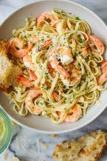

Shrimp Scampi

Description
This fragrant, Italian-style preparation for plump, extra-large shrimp cooked in white wine, lemon juice, fresh parsley, scallions, and the most divinely buttery garlic sauce is the classic shrimp scampi dish enjoyed at restaurants everywhere.
Ingredients
- 2 Tablespoons olive oil
- 4 tablespoons butter
- 4-5 large garlic cloves, minced (or 1 1/2 tablespoons minced garlic)
- 1 1/4 pounds (600 grams) large shrimp prawns, shelled with tails on or off
- Salt and fresh ground black pepper to taste
- 1/4 cup dry white wine or broth
- 1/2 teaspoon crushed red pepper flakes or to taste (optional)
- 2 tablespoons lemon juice
- 1/4 cup chopped parsley
Steps
- Heat olive oil and 2 tablespoons of butter in a large pan or skillet. Add garlic and sauté until fragrant (about 30 seconds - 1 minute). Then add the shrimp, season with salt and pepper to taste and sauté for 1-2 minutes on one side (until just beginning to turn pink), then flip.
- Pour in wine (or broth), add red pepper flakes (if using). Bring to a simmer for 1-2 minutes or until wine reduces by about half and the shrimp is cooked through (don't over cook your shrimp).
- Stir in the remaining butter, lemon juice and parsley and take off heat immediately.
- Serve over rice, pasta, garlic bread or steamed vegetables (cauliflower, broccoli, zucchini noodles).